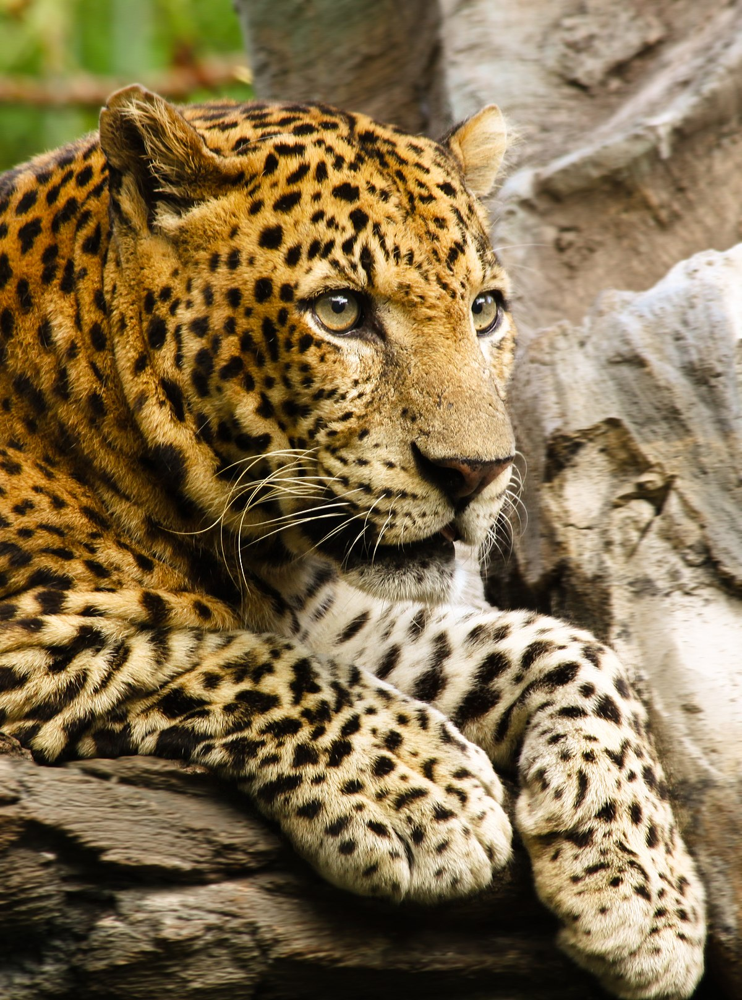
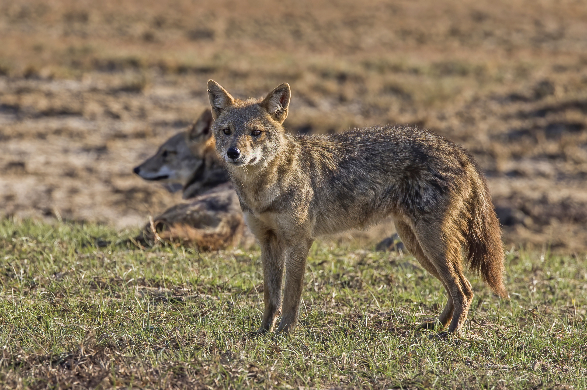

Sri Lankan WildLife

Horton Plains, a mesmerizing expanse situated in the central highlands of Sri Lanka, stands as a testament to the island's breathtaking natural beauty and ecological significance. This unique plateau, characterized by rolling grasslands, mist-covered montane forests, and striking landscapes, is a haven for biodiversity and a crucial watershed for several major rivers. The plains, elevated approximately 2,100 meters above sea level, harbor a distinctive array of flora and fauna adapted to the cool and temperate climate. The elusive and endangered slender loris, as well as various species of endemic birds like the Sri Lanka whistling thrush and the yellow-eared bulbul, find refuge in the lush greenery of Horton Plains. The iconic World's End, a sheer cliff that offers a panoramic view of the lowlands, adds to the allure of this natural wonder.

Horton Plains National Park is also home to several endemic plant species, including the colorful Nelu flower, contributing to the unique charm of the region. The plateau serves as a vital watershed for three major rivers Mahaweli, Kelani, and Walawe highlighting its ecological importance in maintaining the island's water resources. Conservation efforts in Horton Plains focus on preserving its delicate ecosystems, and the park is a UNESCO World Heritage Site in recognition of its outstanding natural value. Visitors to Horton Plains are treated to a sensory feast of rolling grasslands, misty forests, and cascading waterfalls, making it a must-visit destination for those seeking to connect with Sri Lanka's natural heritage.
 |
The Sambar Deer (Rusa unicolor), a majestic and widely distributed species, holds a significant presence in the wildlife of Sri Lanka. Recognized for its impressive size and distinctive appearance, the Sambar deer is the largest deer species in the country. Typically characterized by a dark brown to chestnut-colored coat, with a dense mane of coarse hair and large, rugged antlers in males, these deer exhibit sexual dimorphism with females being smaller and lacking antlers. |
 |
The Fishing Cat (Prionailurus viverrinus) inhabits the island's diverse wetland ecosystems, showcasing its unique adaptation to aquatic environments. With its distinct appearance of grayish-brown fur adorned with spots and stripes, the fishing cat thrives in mangroves, swamps, and reed beds across the country. Possessing partially webbed toes, these felines are skilled swimmers and utilize a fascinating "dabbing" technique to catch fish by mimicking the movement of prey on the water's surface. |
Sinharaja Forest Reserve, nestled in the heart of southwestern Sri Lanka, stands as a pristine sanctuary of biodiversity and a living testament to the island's natural wealth. Designated as a UNESCO World Heritage Site, Sinharaja is a tropical rainforest that has remained relatively undisturbed for millions of years, making it a reservoir of unique and endemic species. The forest's lush green canopy, intertwined with a complex network of vegetation, houses an exceptional diversity of flora and fauna. Sinharaja is home to numerous endemic species, including the vibrant and elusive Sri Lanka blue magpie, the purple-faced langur, and a variety of amphibians, reptiles, and insects found nowhere else on the planet. The forest's rich birdlife adds a symphony of calls to the ambient sounds, creating a truly immersive natural experience.

Sinharaja's significance extends beyond its biological diversity; it plays a crucial role in regulating the island's climate and water resources. The forest acts as a catchment area for several rivers, contributing to the overall ecological balance of the region. Conservation efforts in Sinharaja focus on sustainable management practices, protecting its fragile ecosystems from deforestation and preserving its unique biodiversity. Visitors to Sinharaja are treated to an enchanting journey through its verdant pathways, where every step unveils a new facet of nature's wonders. Exploring Sinharaja is not just a journey through a forest; it is an immersion into the intricate tapestry of life that defines Sri Lanka's ecological heritage.
|  |
The Sri Lankan Leopard, Panthera pardus kotiya, boasts a captivating set of characteristics that distinguish it as a fascinating and unique big cat. Sporting a lush golden coat adorned with striking dark rosettes, these leopards exhibit a level of elegance and beauty that adds to their allure. Notably, the Sri Lankan leopard's fur tends to be thicker than its counterparts, a feature evolved to cope with the cooler temperatures of the island's central highlands. Adapted to various habitats, from dense rainforests to expansive grasslands, these leopards are renowned for their elusive nature, making encounters in the wild a thrilling and rare experience. |
|  |
The Sri Lankan Jackal, scientifically known as Canis aureus naria, stands out as a unique and endemic canid species residing exclusively on the island of Sri Lanka. Distinguished by its captivating golden or tawny coat, the Sri Lankan jackal is adaptable to a variety of habitats, ranging from dense forests to open grasslands. As omnivores, they exhibit a diverse diet, consuming small mammals, birds, insects, fruits, and carrion. Living in family groups, these jackals showcase social behaviors that include cooperative hunting and rearing of their offspring. Their primarily nocturnal nature allows them to navigate their surroundings under the cover of darkness, avoiding human activity and potential predators. Vocalizations, including howls and yelps, play a crucial role in communication within the pack. |